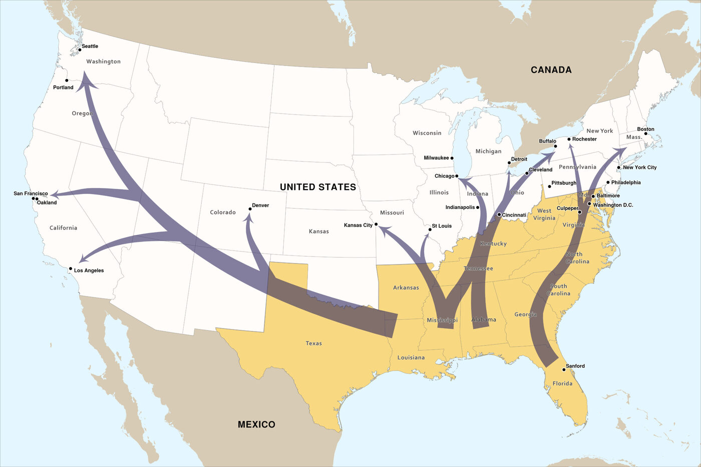

CSU East Bay · Music Department
MUS 302 · What to Listen for in Music
Module 2: African American Foundational Traditions · Reading
Framing Reading Roots and Routes of Black Popular Music
This module covers a single tradition that runs from the early decades of recorded music to the present: , , , , , , and contemporary Black popular music. It is the largest tradition in this course, and it is the tradition the rest of American popular music keeps returning to, , borrowing from, and building on.
To make sense of how one tradition can hold so much, this reading borrows a phrase from the scholar Paul Gilroy: roots and routes. Roots are where music came from. Routes are where it traveled. Black popular music has both, and it cannot be understood with one and not the other. The reading walks through five things you need before the listening guide: what "foundational" means here, what the roots in spirituals and the blues look like, what routes the music traveled in the twentieth century, what happened when sacred music met secular performance, and what it means for a song to do political work.
What "foundational" means
You will see Black popular music called foundational to American popular music in a lot of places, including the title of this module. The word matters, and it is worth being precise about it.
Foundational does not mean "came first," and it does not mean "the source of everything." Other traditions in this course (Latin diasporic music, Asian American music, European American immigrant and working-class music) are not lesser, and they are not derived from this one. They have their own roots and routes, their own communities and conditions, and they intersect and interleave with Black music throughout the twentieth century. Module 1's listening guide on Sugar Pie DeSanto already showed you one of those intersections: a Filipino-Black American singer working in the R&B tradition. The four traditions in this course are in conversation, not in a hierarchy.
What foundational does mean is that the formal innovations, the recording practices, the performance traditions, and the political work of Black musicians shaped what American popular music is. The blues gave American music a harmonic language and a vocal approach that everything from country to rock to still uses. Gospel gave it a relationship between solo voice and group response that you can hear in soul, in stadium rock, in contemporary pop. Funk reorganized in ways that hip hop and electronic dance music are still working through. Hip hop gave the world a way of making music out of other music that has changed how recorded music itself is conceived. When the rest of this course takes up Latin, Asian American, and European American traditions, those musics are doing their own work on their own terms, but they are also in dialogue with the tradition this module covers. You cannot tell the story of American popular music without telling this story.
African American as a category
Before getting to the music, it is worth pausing on the category. "African American" looks like a description, a straightforward way of naming a population by descent. It is also, like every racial category in the United States, the product of historical work. The people the term covers, and the conditions under which it covers them, were assembled across centuries by law, by violence, by demographic accident, and by the cultural and political organizing of the people the category was being imposed on. The music this module traces is inseparable from that history. The blues, gospel, rhythm and blues, soul, funk, and hip hop are not just musics that African Americans happen to have made. They are musics that the conditions of being African American in the United States produced, and that those conditions kept reproducing across generations because the conditions did not go away.
The category begins with the . Between roughly 1525 and 1866, an estimated 12.5 million Africans were forcibly transported to the Americas; about 388,000 of them arrived in what would become the United States, the rest in the Caribbean and Brazil and elsewhere. The people who arrived in North America came from many different societies (Wolof, Mandinka, Yoruba, Igbo, Akan, Kongo, and many more) speaking different languages, practicing different religions, with different musical traditions. The conditions of enslavement in the British North American colonies and then the United States ground those distinctions down deliberately, mixing people from different societies in the same plantation labor force as a strategy to prevent organized resistance, banning the languages and the religious practices people had brought with them, and forcing the development of new shared cultural forms (a new English-based common language, a new Black Protestant Christianity, new musical practices) out of the wreckage. The category "African American" emerges out of that process: not as a fixed identity carried across the Atlantic, but as something new, hammered together under conditions designed to make it impossible.
The political work continued after Emancipation. The legal definition of who counted as Black, and what consequences followed from that counting, was repeatedly remade across the nineteenth and twentieth centuries by federal and state law, by court decisions, and by violence. The (the principle that any traceable African ancestry made a person legally Black) was never a single statute, but it was codified across most southern states between roughly the 1890s and the 1930s as part of the broader Jim Crow legal architecture, and it was enforced informally for much longer in the North. The rule had two effects that matter for this module's music. First, it produced a Black American population that was treated as a single category for legal, social, and commercial purposes even though its members descended from many African societies and, in many cases, also from European and Indigenous people. Second, the rule's enforcement was inseparable from the systematic transfer of wealth, land, and political power away from that population, a transfer that the music industry would later replicate in its own forms.
The category was also produced in the inverse direction by the racialization of white Americans, which Module 5's framing reading discusses at length. The two processes are the same process. "African American" and "white American" are co-constructed; the historical work that produced one produced the other. Module 5 traces the white side; Module 2 traces the Black side. Reading the two modules together is the closest the course comes to seeing the whole of how American popular music's racial categories were made.
One implication, which matters for how this module organizes its anchor tracks, is that the music we now hear as foundationally Black often emerged from situations that were musically much less segregated than the categories the recording industry would later impose. In the rural South of the late nineteenth and early twentieth centuries, Black and white musicians played together at dances and on streets, traded repertoire, sat in on each other's recordings (Lesley Riddle teaching the Carter Family the blues; the Mississippi Sheiks playing for both Black and white audiences), and shared a regional musical culture that the recording industry then sorted into the segregated marketing categories "race records" and "hillbilly records" beginning in the 1920s. The historian Karl Hagstrom Miller calls this sorting the construction of a "musical color line," a cultural parallel to the physical one. By the time the recording industry had finished its sorting work, Black music and white music were two separable commercial categories. Before the recording industry, they were less so. Module 2's lineup necessarily privileges what the recording industry preserved, and what the recording industry preserved was already racially organized in ways the music itself often had not been.
Another implication is that the category "African American" inside the United States has always covered an enormous amount of internal diversity (regional, class, religious, gender, sexual, ethnic) that the category itself flattens. The musicians on this module's lineup are Mississippi-born and Georgia-born and Texas-born and California-born; they came from rural and urban backgrounds, working-class and middle-class households, sanctified and Baptist and African Methodist Episcopal and secular families, English-speaking and Creole and Gullah-speaking communities. The music is foundational to American popular music partly because of that internal diversity: the same category contains many traditions, and the traditions talk to each other constantly. When this module's listening guides return to the question of who is in the room and what they sound like, it is partly to push against the tendency the category produces to flatten that diversity into a single representative voice. There is no single Black American voice. There are many, and they are in conversation.
Roots: spirituals, work songs, and the blues
The roots of Black popular music in the United States go back further than recorded music does. Enslaved Africans brought to the Americas carried with them: layered rhythms, between a leader and a group, the use of voice as percussion, the relationship between singing and speaking. These practices survived under conditions designed to destroy them, and they developed in the music enslaved people made: , work songs, , . None of this music was written down at the time, and most of it was not recorded. We know about it from the people who heard it, the people who sang it, and the music that came out of it.
The blues took shape in the late nineteenth and early twentieth centuries, mostly in the rural South, mostly among Black communities living through the violent collapse of and the rise of . Blues is a form (most famously the , a repeating you can hear once you know to listen for it), a vocal approach (a way of singing close to speech, with and held syllables), and a way of writing about feeling (often plain-spoken, often funny, often heartbroken, frequently all three at once). It is the first form on the through-line this module traces, and it feeds everything downstream.
By the 1920s the blues had a recording industry. Mamie Smith's "Crazy Blues" (1920, on Okeh Records) was the first commercially successful blues recording by a Black artist, and its success opened a market the industry called : discs marketed by Black record labels and the Black-music divisions of major labels, sold mostly to Black listeners. The blues that got recorded was not the only blues being played, and the recorded blues was already a more commercial, more produced version of what was happening in and on porches. But the recordings are what we have, and they shape what came next. Bessie Smith, the first anchor track of this module — her 1925 Columbia recording of W.C. Handy's "St. Louis Blues," cut with on cornet — made her name in this context. The listening guide works through the recording in detail.
Routes: the Great Migration and the recording industry
Two simultaneous movements shaped Black popular music in the twentieth century: people moving and music moving.
People moving was the , which Module 1's framing reading introduced. Between roughly 1916 and 1970, about six million African Americans left the rural South for cities in the North, Midwest, and West, in two large waves separated by the Depression. They moved for industrial jobs, for safer streets, for schools, for the chance to vote, for the chance not to be lynched. They carried music with them. The blues that was a music in the 1920s became a music by the 1940s, with electric guitars and amplified harmonicas, because Mississippi musicians moved to Chicago and the music adapted to where they were now living. Detroit became the home of because Detroit was where Berry Gordy was, and Berry Gordy was in Detroit because his family had moved north from rural Georgia. Memphis and Muscle Shoals became soul music capitals through similar histories. The Bay Area's Black music scene (including the Sugar Pie DeSanto track from Module 1) traces in part to the wartime that drew Black workers to Oakland, Richmond, and Los Angeles. Philadelphia, New York, Oakland, Los Angeles: every Black music capital of the twentieth century is also a Great Migration destination.
Music moving was the recording industry: records pressed in one city sold in another, played on radio in a third, danced to in a fourth. The industry that built this distribution network was not neutral. It was segregated. From the 1920s through the 1940s, records by Black artists were marketed under the "race records" category, sold mostly through Black-owned stores and on Black radio stations, and largely ignored by the white-coded mainstream charts. In 1949, the Billboard journalist Jerry Wexler suggested replacing "race records" with "rhythm and blues," and the chart took the new name. The renaming was a small thing on its surface and a large thing underneath: it acknowledged that the music was made for and by Black communities, and at the same time it positioned that music to be heard, bought, and eventually appropriated by a much wider audience. The categories the industry used to sell the music shaped what counted as which kind of music, who got paid for it, and whose names ended up on the Hall of Fame plaques fifty years later.
The pattern this module will keep returning to is appropriation, and it is worth being precise about what that means. Appropriation is not the same as influence. Music has always moved across communities; people who hear something good play it back, transform it, build their own work on top of it, and that is how music has worked everywhere that two musical traditions have shared the same physical space. What appropriation names is something narrower: the structured pattern, repeated across roughly a century of American popular music, in which white musicians have taken up Black musical material and Black musical labor under conditions where the white musicians received more money, more credit, more chart access, and more long-term institutional recognition than the Black originators received for the same or better work. The pattern is not about any individual musician's intent; it is about the conditions the music industry produced, and the conditions the music industry produced were the conditions of Jim Crow, segregation, and racial capitalism more broadly.
The pattern repeats. In the 1920s and 1930s, white jazz bandleaders (Paul Whiteman, who marketed himself as "the King of Jazz"; Benny Goodman, "the King of Swing") drew their repertoire and their arrangements directly from Black musicians and arrangers (Fletcher Henderson sold many of his arrangements to Goodman; Don Redman's innovations shaped the entire swing-band sound), without sharing the chart access, the prestigious bookings, or the long-term royalty income those musicians' work generated. In the 1950s, the white "cover version" became a routine industrial practice: 's covers of 's "Tutti Frutti" and "Long Tall Sally" out-charted the originals on Billboard's pop chart, with Boone earning royalties and chart credit while Richard's recordings stayed on the segregated R&B chart. 's breakthrough recordings at Sun Records in 1954-1955 (the most famous being "That's All Right" originally recorded in 1946 by ) entered the white pop market on the strength of material Black musicians had already recorded but could not get past the segregated chart structure. Module 5's framing reading discusses this pattern in detail from the white-American side; from the Black-American side it shows up as decades of musicians who watched their work generate fortunes for other people.
The pattern persists past the formal end of segregated charts. In the 1960s the (, , , 's various bands) explicitly named their Black American sources (the Stones covered and ; Clapton credited and ), but the chart and the income flowed disproportionately to the British musicians; many of the Black originators they named ended their lives in poverty (Muddy Waters died comfortable, but Arthur Crudup did not; Robert Johnson had died in 1938 and saw none of it). In the 1980s the music television channel initially refused to play Black artists at all, citing format-based reasons that did not survive scrutiny, and only began doing so under sustained pressure (including from Michael Jackson's label, CBS, threatening to pull all of its white artists' videos if "Billie Jean" was not played in 1983). In the 1990s and 2000s the same pattern repeated in hip hop: achieved a level of commercial and critical recognition his Black peers did not, in part because the music industry and the broader American culture were more comfortable marketing a white rapper to a mass white audience. In the 2010s and 2020s the pattern continues in country (Lil Nas X's "Old Town Road" being removed from the Billboard country chart in 2019 on category grounds that did not seem to apply to white artists making similar genre crossings), in rock (the continuing erasure of Black women's contributions to rock and roll's invention), and in the way music history itself gets told (Sister Rosetta Tharpe was inducted into the Rock and Roll Hall of Fame in 2018, twenty-five years after Elvis Presley).
None of this is news to the musicians at the center of this module's story. Bessie Smith was paid a fraction of what Columbia made from her records and was buried in an unmarked grave because the resources to mark it were not there; the grave was marked in 1970 by Janis Joplin, who had named Smith as a central influence. James Brown spent decades fighting his label for the publishing rights to his own compositions. Grandmaster Flash and the Furious Five had to sue Sugar Hill Records over "The Message" royalties. The political work this module names in Track 5 (Beyoncé's "Formation," the Super Bowl performance with Black Panther regalia) is in part a reckoning with this whole history, and it is partly the work of an artist who, at her commercial scale, can now refuse the conditions the music industry imposed on her predecessors. The lineup this module follows is the lineup that survived the conditions. Many other musicians did not, and the music history that has come down to us is a survival bias as much as a quality judgment.

The list below names the major record companies that recorded Black popular music in the cities the migration built. Some were Black-owned; most were not. Some are still operating; most are not. All shaped the music that came out of the cities they sat in.
| Label | Notable artists | Why it matters |
|---|---|---|
| Black Swan |
Ethel Waters, Alberta Hunter | The first major Black-owned U.S. label, founded by W.C. Handy's business partner Harry Pace; bought out by Paramount in 1924. |
| Okeh |
Mamie Smith, Louis Armstrong | Recorded Mamie Smith's "Crazy Blues" in 1920, the breakthrough that opened the "race records" market. |
| Columbia |
Bessie Smith | Major label with a deep classic-blues catalog; Smith's "St. Louis Blues" with Louis Armstrong was recorded here in 1925. |
| Decca |
Sister Rosetta Tharpe, Ella Fitzgerald | Recorded Tharpe's "Strange Things Happening Every Day" in 1944, the first gospel record to cross to the R&B chart. |
| Atlantic |
Ruth Brown, Ray Charles, Aretha Franklin | Founded 1947; the leading R&B and soul label of the postwar era; partnered with Stax to record Otis Redding and Wilson Pickett. |
| Vee-Jay |
Jimmy Reed, John Lee Hooker, the Staple Singers | Founded in Gary, Indiana in 1953 by Vivian Carter and James Bracken; the most successful Black-owned label of the 1950s, with a deep blues, , and soul catalog (and, briefly, the U.S. distribution of early Beatles records). |
| Chess |
Muddy Waters, Howlin' Wolf, Chuck Berry, Etta James, Sugar Pie DeSanto | The label that made Mississippi Delta blues into electric Chicago blues, and Chicago blues into rock and roll. Founded by Polish-Jewish immigrants Leonard and Phil Chess. |
| Motown |
The Supremes, Marvin Gaye, Stevie Wonder, the Temptations | Founded 1959 by Berry Gordy; the most commercially successful Black-owned label in U.S. history; engineered Black soul music's mass crossover into the white pop mainstream. |
| King |
James Brown, the "5" Royales | Founded 1943 by Syd Nathan; recorded both R&B and country (often with the same studio musicians); Brown's longtime label, including for "Say It Loud" in 1968. |
| Stax |
Otis Redding, Sam & Dave, Booker T. & the M.G.'s, Isaac Hayes | The home of Southern soul, with a racially integrated house band (Booker T. & the M.G.'s) that recorded gritty, horn-driven music in counterpoint to Motown's polished sound. |
| Sun |
Howlin' Wolf, B.B. King, Junior Parker, then Elvis Presley, Johnny Cash | Sam Phillips first recorded Black blues musicians in the early 1950s, then in 1954 began recording white singers like Elvis performing Black-derived material; a key node in how Black music became commercial rock and roll. |
| Specialty |
Little Richard, Lloyd Price, Sam Cooke (with the Soul Stirrers, before he went solo) | Founded 1946 by Art Rupe; central to West Coast R&B and gospel; Sam Cooke's first recordings were here, and Little Richard's "Tutti Frutti" was a Specialty release. |
From sacred to secular, and back
One of the most consistent stories in twentieth-century Black popular music is the tension between , and the constant traffic between them.
Black church music in the United States, especially in the Black Protestant traditions, has always been a place of musical training. Choirs, soloists, organists, and pianists develop in the church, often from childhood. The vocal techniques that mark Black popular music (the , the , the , the call-and-response with a congregation) are church techniques first. When you listen to or or , you are listening to artists whose voices were trained in church before they were trained anywhere else.
Gospel music, as a recorded popular form, took shape in the 1920s and 1930s through composers like , who was a successful blues musician before he became "the Father of Gospel Music." Dorsey brought blues feeling into church music: the bent notes, the way of singing close to speech, the rhythmic looseness. Conservative church communities did not always welcome this. Music that sounded like the blues was, for some, music that belonged in a juke joint, not a sanctuary. Sister Rosetta Tharpe, the second anchor track of this module — her 1944 "Strange Things Happening Every Day" on Decca, the first gospel record to cross to the R&B chart — lived this tension. The listening guide works through the recording in detail. She was a -trained gospel singer who played in nightclubs, and she was both celebrated and condemned for it. Sam Cooke (whom you heard in Module 1) lived a different version of the same tension when he left the , a successful gospel quartet, to become a secular pop star. The hardest part of that move, for Cooke and for many other gospel-to-secular artists, was that some of his core gospel audience treated the move as a betrayal.
The flow goes both ways. Soul music in the 1960s pulled gospel form into secular love songs. Funk in the late 1960s and 1970s pulled gospel rhythms and the preacher's voice into dance music. Contemporary R&B in the 1990s and 2000s went back to the church for vocal technique. Hip hop has its own version of this: the , where trade verses in a call-and-response, has structural roots in the testifying tradition. Almost every Black popular music style covered in this module has gospel somewhere in its DNA.
The queer Black thread
Black popular music and queer Black life have been entangled throughout the twentieth and twenty-first centuries, and the entanglement deserves its own section here. Module 1's framing reading named the broader queer thread that runs across the course; in the African American foundational tradition the thread is so dense that pulling it out as a separate section is necessary to see what would otherwise stay hidden.
The first wave shows up in the classic blues women of the 1920s. 's 1928 "Prove It On Me Blues" sang directly about her relationships with women ("went out last night with a crowd of my friends, they must've been women, 'cause I don't like no men"), and Rainey was openly bisexual in her personal life, holding what contemporary accounts describe as parties with both male and female lovers in Chicago and on tour. Bessie Smith, the first anchor track of this module, was bisexual and had documented affairs with women across her career. performed in the Harlem cabaret scene of the late 1920s and 1930s in a top hat and tuxedo, married a woman in a civil ceremony in New Jersey in 1931, and recorded sides that turned popular love songs into queer ones. The historian Hazel V. Carby and the literary critic Angela Davis (in Blues Legacies and Black Feminism, 1998) have both argued that the classic blues women's open treatment of sexuality, including queer sexuality, was inseparable from the political work the form was doing: a Black working-class women's music that refused to be respectable about the lives the women were actually living.
The thread runs underground through the middle of the twentieth century and resurfaces in disco. Disco is often discussed as a 1970s commercial pop genre that crossed over from Black radio to white pop charts and then collapsed in the 1979 backlash. The deeper history is that disco grew out of a network of mostly gay, mostly Black-and-Latino dance spaces in New York City in the late 1960s and early 1970s, and that the music's musical innovations (the four-on-the-floor kick drum, the extended dance mix, the role of the DJ as a curator of a continuous experience) came directly out of those spaces and the communities that built them. 's loft parties at 647 Broadway, beginning in 1970 with the legendary "Love Saves the Day" Valentine's Day party, built the membership-based gay dance space the rest of the New York scene would model itself on. The Continental Baths in the basement of the Ansonia Hotel on the Upper West Side, an actual gay bathhouse, hired the young DJs and in the early 1970s and gave them their training ground; Bette Midler famously launched her career singing there with Barry Manilow on piano. at 84 King Street, where Levan was resident DJ from its 1977 opening to its 1987 closing, was a membership-based gay dance club whose nickname inside the scene was "Gay-rage"; its sound system and Levan's curation built the template for the modern dance club. The historian Tim Lawrence's Love Saves the Day: A History of American Dance Music Culture, 1970-1979 (2003) is the standard scholarly account of this period.
House music, the genre that succeeded disco when disco collapsed commercially, grew out of the same network. Frankie Knuckles, having declined to follow Levan back to New York in 1977, moved to Chicago to become resident DJ at the Warehouse, a gay dance club at 206 South Jefferson Street whose primarily Black-and-Latino-and-gay membership came to ask record stores for "Warehouse music" by the early 1980s; the name was shortened to "house" and the genre took its name from the room. Knuckles's house records and the broader Chicago scene that surrounded him (Ron Hardy at the Music Box, the producers Jesse Saunders and Marshall Jefferson and Larry Heard, the Trax and DJ International labels) built a Black queer dance music tradition that would shape the next forty years of electronic dance music worldwide. , the Black openly gay disco singer whose 1978 "You Make Me Feel (Mighty Real)" remains one of the genre's canonical recordings, performed in San Francisco's drag and queer scenes from the early 1970s and was a fixture at the Paradise Garage and the Saint when he toured to New York; his voice and his unapologetic stage presence trained the next generation of queer Black performers in what was possible.
The in the 1980s and 1990s tore through these communities catastrophically. Sylvester died of AIDS-related illness on December 16, 1988, at 41. Larry Levan died on November 8, 1992, at 38, of complications related to addiction and untreated AIDS-related illness. The dance-music journalist Frank Owen estimated in his 2003 book Clubland that the New York and Chicago club-music scenes lost a substantial portion of their core community between 1985 and 1995, including dozens of DJs, producers, dancers, vocalists, club owners, and lighting and sound technicians who never became names because they died before their work could be recorded or remembered. The musical innovations the survivors built into house and garage and the contemporary R&B that grew out of those traditions are partly a memorial: the survivors carried the work forward because the people who would have carried it forward themselves were gone. Frankie Knuckles survived the AIDS years and died of complications related to diabetes in 2014, having lived long enough to see the music he helped invent become the dominant template for global popular dance music; in 2004 a stretch of Jefferson Street in Chicago was renamed Frankie Knuckles Way at the site where the Warehouse had stood, and in 2023 the building was designated a Chicago landmark.
The thread continues in contemporary Black popular music. 's 2012 Tumblr open letter on the eve of Channel Orange, describing his first love as a young man, was the first time a major figure inside contemporary R&B and hip hop had come out publicly while at the commercial peak of his career; the album won the 2013 Grammy for Best Urban Contemporary Album and Ocean's subsequent work has been some of the most critically influential Black popular music of the 2010s. 's 2019 "Old Town Road" was the longest-running number-one single in Billboard Hot 100 history; his subsequent work has been openly queer in a way no major Black male pop star had previously been, and the chart and label resistance he has faced (the Billboard country-chart removal of "Old Town Road" in 2019; the Christian backlash to "Montero (Call Me By Your Name)" in 2021) makes visible patterns of homophobia and racism in the industry that the disco-era musicians named decades ago. , who came out as nonbinary and pansexual in 2018 and 2022 interviews, has made queer Black identity central to her work since her 2010 debut. Beyond these named figures, the broader contemporary scene (Tyler the Creator, Kehlani, Syd, Steve Lacy, Kaytranada, Arca, Honey Dijon, Robert Glasper's collaborations with queer artists) is a substantial tradition that ten years ago could not have been pulled together under a single banner and that today is part of how the foundational tradition this module covers is being remade.
Music as social commentary and political address
Music can do political work in more than one way. The simplest and most visible mode is direct address: a song that says, in lyrics, what it thinks about a political situation. Sam Cooke's "A Change Is Gonna Come" does this. James Brown's 1968 "Say It Loud — I'm Black and I'm Proud," the third anchor track of this module, does this. 's 1982 "The Message," the fourth anchor track of this module, does this.
Direct address is not the only mode. A song can do political work through formal innovation: by reorganizing rhythm in a way that disrupts existing musical hierarchies, by using a sound the establishment considers too rough, by sampling music in a way that makes a Black archive audible. James Brown's funk innovations, with their shift from emphasis on the to emphasis on the , were technically political in this sense: they changed the way American popular music organized time, and the change came out of Black studio practice. Hip hop's sampling, which builds new music by quoting old recordings, is political the same way: it treats Black recorded music as an archive, a resource, a usable past.
A song can also do political work through presence. When Sister Rosetta Tharpe walked onstage with an electric guitar in 1944, the political work was partly that she was there at all, in a tradition that did not expect a Black queer woman to be claiming that instrument and that stage. When Beyoncé performed "Formation" — the fifth anchor track of this module, released in 2016 — at the Super Bowl halftime show in 2016 with a backing troupe in regalia, the political work was partly the visibility of Black Southern identity on the most-watched stage in American culture. Presence is not always loud, but it is rarely accidental.
The five anchor tracks in this module each do at least one of these kinds of political work, and most of them do more than one. As you listen, watch for which mode is operating. Sometimes the lyrics are doing the politics. Sometimes the sound is. Sometimes it is just that the artist is in the room, claiming space.
The tracks are arranged chronologically across roughly a century: Bessie Smith in 1925, Tharpe in 1944, James Brown in 1968, Grandmaster Flash and the Furious Five in 1982, Beyoncé in 2016. This is a different shape from Module 1, where four tracks were arranged for cross-cultural contrast. Module 2's argument is about how one tradition develops over time, so the order matters: each track carries something forward that the previous one set up. You can complete the listening guides in any order, but the chronological order is the one I would recommend.
What this module leaves out
Five anchor tracks cannot cover the African American foundational tradition. The lineup this module follows traces one major path through it (rural blues into recorded blues into gospel-soul-funk-hip hop, with contemporary R&B at the end), and the choices the lineup makes leave out a great deal. Four areas in particular are worth naming, because each is a defensible and rich subject for the final project ahead of you.
The developed tradition past the blues. Module 2 anchors the recorded blues with Bessie Smith and Louis Armstrong in 1925, but jazz as a continuous tradition runs forward from there for another century, and almost none of that continuous development sits on this module's anchor lineup. in the mid-1940s (Charlie Parker, Dizzy Gillespie, Thelonious Monk, Bud Powell, Max Roach) reorganized American popular music's harmonic and rhythmic vocabulary out of the same Black urban communities that produced rhythm and blues. Hard bop in the 1950s (Art Blakey and the Jazz Messengers, Horace Silver, Clifford Brown) brought gospel and blues feeling back into the bebop language. Modal jazz in the late 1950s and early 1960s (Miles Davis's Kind of Blue, 1959; John Coltrane's A Love Supreme, 1965) opened up harmonic space in ways that reshaped pop and rock arrangement for decades. from the 1960s forward (Ornette Coleman, Cecil Taylor, Albert Ayler, Sun Ra, the in Chicago that Module 4's framing reading cross-references) treated improvisation as a political and aesthetic practice tied to the freedom struggles of the same decade. Fusion in the 1970s (the Mahavishnu Orchestra, Weather Report, Hancock's Head Hunters, 1973) brought rock instrumentation and Black popular dance rhythms into the jazz tradition. The contemporary work that runs from (cross-referenced in Module 4) through Robert Glasper, Esperanza Spalding, Christian Scott Atunde Adjuah, Kamasi Washington, the contemporary Blue Note and International Anthem rosters, and the Black avant-garde of the 2010s and 2020s, would all be substantial final-project territory. Ben Ratliff's The Jazz Ear, Ted Gioia's The History of Jazz, and the AACM-focused work of George Lewis (A Power Stronger Than Itself, 2008) are good places to start.
The Black vocal-group tradition that runs from the gospel quartets through doo-wop into 1960s and 1970s soul groups. Sister Rosetta Tharpe on Track 2 carries some of the gospel-quartet-and-female-soloist lineage, but the broader male gospel quartet tradition of the 1940s and 1950s "gospel boom" (the Soul Stirrers with R.H. Harris and then Sam Cooke; the ; the Golden Gate Quartet; the Swan Silvertones; the Fairfield Four; the Five Blind Boys of Mississippi; the Five Blind Boys of Alabama) is its own substantial tradition that fed directly into both 1950s doo-wop and 1960s soul. Doo-wop itself was substantially a Black vocal-group music: (whose Goffin-and-King recording is Module 5's Track 3, but the group's broader 1953-1972 career sits inside the Black vocal-group tradition), the Coasters, the Platters, the Penguins, the Moonglows, the Five Satins, and 's Teenagers (whose Track 1 in Module 5 picks up the cross-ethnic angle, but whose musical framework was Black gospel-quartet-derived doo-wop) all came out of this tradition. The 1960s and 1970s soul vocal groups extended the lineage: Smokey Robinson and the Miracles, the Temptations, the Four Tops, Gladys Knight and the Pips, the Stylistics, the Spinners, the Chi-Lites, the Delfonics, the O'Jays, Earth, Wind & Fire, Sly and the Family Stone (the integrated edge case). Module 5 covers doo-wop through the cross-ethnic working-class Catholic angle; this module would have covered it through the Black vocal-group tradition if there had been room. Tony Heilbut's The Gospel Sound (1971, expanded 1985) and Anthony Heilbut and Mark Burford's recent work on the gospel-quartet tradition are the standard scholarly accounts; for the soul vocal groups, the Suzanne Smith volume Dancing in the Street: Motown and the Cultural Politics of Detroit (1999) and Mark Anthony Neal's What the Music Said (1999) are good entry points.
The contemporary R&B continuum between James Brown and Beyoncé. Track 3 jumps from James Brown in 1968 to Track 4's Grandmaster Flash in 1982 and then Track 5's Beyoncé in 2016, and the lineup's chronological gaps mean the substantial contemporary R&B tradition between funk and the present-day Beyoncé moment runs underneath this module rather than on it. The major 1970s and 1980s figures the module does not anchor ('s run from Music of My Mind in 1972 through Songs in the Key of Life in 1976 and forward; , particularly What's Going On in 1971; as a solo artist after ; Donny Hathaway; Roberta Flack; Chaka Khan and Rufus; Earth, Wind & Fire; 's run from Dirty Mind in 1980 through Sign o' the Times in 1987; 's solo career from Off the Wall in 1979 through Thriller in 1982 and forward; Whitney Houston from her 1985 debut forward; Janet Jackson from Control in 1986 forward; Mariah Carey from her 1990 debut forward) are each a substantial story. The late-1980s "new jack swing" (Teddy Riley, Bobby Brown, the Guy and Wreckx-N-Effect productions) and the 1990s and 2000s neo-soul movement (D'Angelo's Brown Sugar in 1995 and Voodoo in 2000; Maxwell's Urban Hang Suite in 1996; Erykah Badu's Baduizm in 1997; 's The Miseducation of Lauryn Hill in 1998; the Soulquarians collective at Electric Lady Studios) carry the gospel-and-funk inheritance through the 1990s and 2000s. The contemporary R&B that runs alongside hip-hop's mainstream dominance from the 2010s forward (Frank Ocean's Channel Orange in 2012 and Blonde in 2016; Solange's A Seat at the Table in 2016; Janelle Monáe; ; SZA; Daniel Caesar; the Drake-and-The Weeknd alternative-R&B Toronto scene) is the immediate musical world Beyoncé's "Formation" sits inside. Mark Anthony Neal's Soul Babies: Black Popular Culture and the Post-Soul Aesthetic (2002), Daphne Brooks's Liner Notes for the Revolution (2021), and the journalism collected in books like Hanif Abdurraqib's They Can't Kill Us Until They Kill Us (2017) are the kinds of writing that take this contemporary R&B tradition seriously as a scholarly subject.
The -era conscious hip hop that runs forward from "The Message." Track 4's Grandmaster Flash recording is the founding moment of socially conscious hip hop; the lineage from there forward ( in the late 1980s, KRS-One and Boogie Down Productions, the Native Tongues collective, NWA in a different mode, , Lauryn Hill on The Score and The Miseducation, Mos Def and Common, the Roots and Black Thought, Killer Mike and Run the Jewels) eventually arrives at the Compton rapper , whose 2015 album To Pimp a Butterfly and its track "Alright" became the most consequential conscious-hip-hop work of the Black Lives Matter moment. "Alright" was released as a single in June 2015, four months before the album, and was adopted almost immediately as a protest anthem at Black Lives Matter demonstrations: the chant "we gon' be alright" carried through marches in Cleveland after Tamir Rice, in Chicago after Laquan McDonald, in Baltimore after Freddie Gray. The song was nominated for Song of the Year at the 2016 Grammys and won Best Rap Performance and Best Rap Song; To Pimp a Butterfly was nominated for Album of the Year. In 2018 Lamar's DAMN. became the first hip hop album to win the Pulitzer Prize for Music. The whole arc of Lamar's work, including good kid, m.A.A.d city (2012), DAMN. (2017), and Mr. Morale & the Big Steppers (2022), sits inside the conscious-hip-hop lineage Track 4 introduces, and is a defensible and rich subject for the final project. Marcus J. Moore's The Butterfly Effect: How Kendrick Lamar Ignited the Soul of Black America (2020) is the standard accessible study of Lamar's work; Imani Perry's Prophets of the Hood: Politics and Poetics in Hip Hop (2004) is the broader scholarly frame.
Sources for this reading
Gilroy, Paul. The Black Atlantic: Modernity and Double Consciousness. Harvard University Press, 1993. The foundational text on diaspora as a frame for Black music; the source of the "roots and routes" framing.
Maultsby, Portia, and Mellonee Burnim, eds. African American Music: An Introduction. 2nd edition, Routledge, 2014. The standard textbook on the tradition this module covers, with chapters on each of the genres in the lineage diagram.
Ramsey, Guthrie P. Race Music: Black Cultures from Bebop to Hip-Hop. University of California Press, 2003. A central scholarly account of how Black music genres develop in conversation with each other and with the recording industry.
Wald, Gayle. Shout, Sister, Shout!: The Untold Story of Rock-and-Roll Trailblazer Sister Rosetta Tharpe. Beacon Press, 2007. The standard biography of Tharpe; the source for what we say about her in this module.
Wilkerson, Isabel. The Warmth of Other Suns: The Epic Story of America's Great Migration. Random House, 2010. A vivid, accessible history of the Great Migration through three lives.
Werner, Craig. A Change Is Gonna Come: Music, Race, and the Soul of America. Revised edition, University of Michigan Press, 2006. A wide-ranging history of Black popular music as the soundtrack of American social change from the 1950s through the early 2000s.
Rose, Tricia. Black Noise: Rap Music and Black Culture in Contemporary America. Wesleyan University Press, 1994. The foundational scholarly study of hip hop as a Black cultural form, indispensable for the "Message" track.
Miller, Karl Hagstrom. Segregating Sound: Inventing Folk and Pop Music in the Age of Jim Crow. Duke University Press, 2010. The standard scholarly account of how the recording industry's marketing categories produced the "musical color line" the rest of this module's history sits inside.
Davis, Angela Y. Blues Legacies and Black Feminism: Gertrude "Ma" Rainey, Bessie Smith, and Billie Holiday. Pantheon, 1998. The foundational political-theoretical reading of the classic blues women's music, with substantive treatment of the queer Black thread the section above traces.
Lawrence, Tim. Love Saves the Day: A History of American Dance Music Culture, 1970-1979. Duke University Press, 2003. The standard scholarly history of the New York and Chicago dance-club scenes that produced disco and the broader queer Black dance-music tradition.
Gamson, Joshua. The Fabulous Sylvester: The Legend, the Music, the Seventies in San Francisco. Henry Holt, 2005. The standard biography of Sylvester, with substantive treatment of the broader disco-era queer Black popular music scene.